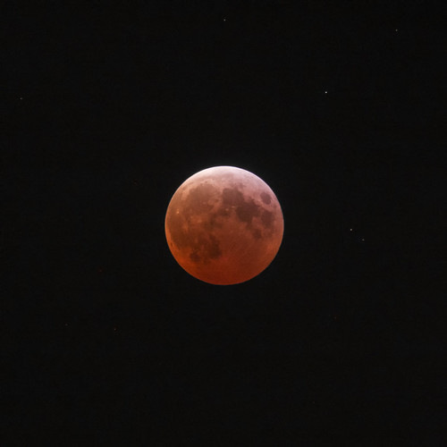
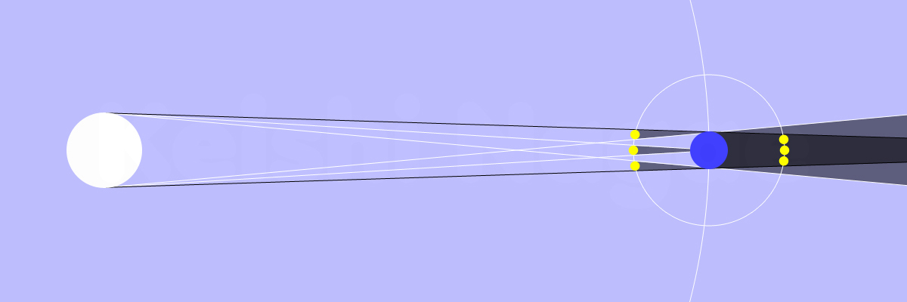

円周率の日の皆既月食

今日 2025-03-14 は望（満月）で皆既月食があった。 関東以東なら月の出直後に終わりかけの部分月食が見れたそうだが，残念ながら西日本ではギリギリ半影食が見れるかどうかのタイミングだった。 まぁ，半影食を肉眼で確認するのはほぼ無理だと思うけど。
ありがたいことに YouTube のすばる望遠鏡チャネルで皆既月食ライブをやっておられた。 アーカイブも見れる。
ありがたや 🙇
Flickr にもたくさんの写真が上がっている。 とりあえずひとつ挙げておく。

もうひとつ。 今日は3月14日。 ということは円周率の日で数学の日でアインシュタインの誕生日なのよ。
で，今日の APOD (Astronomy Picture of the Day) がこれ。
写真だけ見てもピンとこなかったが，説明文に
What phase of the Moon is 3.14 radians from the Sun? The Full Moon, of course. Even though the Moon might look full for several days, the Moon is truly at its full phase when it is Pi radians (aka 180 degrees) from the Sun in ecliptic longitude. That’s opposite the Sun in planet Earth’s sky. […] March 14 2025, the moon is Pi radians from the Sun at exactly 06:55 UTC. That’s about three minutes before the midpoint of the March Full Moon’s total lunar eclipse.
とか書いてあって，正直「ヤラレタ」と思ったね。
こんな見事な駄洒落に気が付かないとか orz

そう。 皆既月食は地球から見て太陽と月が $\pi\,\mathrm{rad.}$ の位置関係になるのよ。 偶然とはいえ，なんという見事な駄洒落（大事なことなので2回言いました）。
ちなみに今年はもう1回，9月8日（月）早朝に皆既月食があり，これは日本全国で見られる。 早朝というか日曜深夜というべきか。 1時28分頃から食が始まり2時30分から皆既食になる。 皆既食は3時53分頃まで続き，食が終わるのが4時56分頃。 しかもこのときは皆既食中に6等〜7等の星の星食（月没帯食）が3つくらい見れるらしい。 望遠鏡を持ってる方は必見ですな。
晴れたらいいねぇ。
ブックマーク
参考図書

- 天文年鑑 2024年版
- 天文年鑑編集委員会 (編集)
- 誠文堂新光社 2023-11-24 (Release 2023-11-24)
- 単行本
- 4416623410 (ASIN), 9784416623411 (EAN), 4416623410 (ISBN)
- 評価
天文ファン必携。2024年版。これが届くと年末って感じ。

- 天体物理学
- Arnab Rai Choudhuri (著), 森 正樹 (翻訳)
- 森北出版 2019-05-28
- 単行本
- 4627275110 (ASIN), 9784627275119 (EAN), 4627275110 (ISBN)
- 評価
興味本位で買うにはちょっとビビる値段なので図書館で借りて読んでいたが，やっぱり手元に置いておきたいのでエイヤで買った。まえがきによると，この手のタイプの教科書はあまりないらしい。内容は非常に堅実で分かりやすい。理系の学部生レベルなら問題なく読めるかな。

- 数学ガールの秘密ノート／丸い三角関数
- 結城 浩 (著)
- SBクリエイティブ 2014-04-23 (Release 2015-04-18)
- Kindle版
- B00W6NCLJM (ASIN)
- 評価
丸と三角の楽しい関係。頑張れば小学生高学年でも大丈夫。

{kind=link}